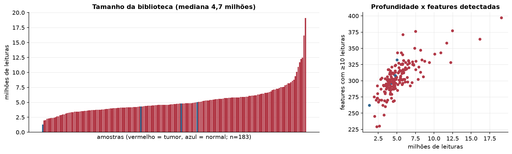
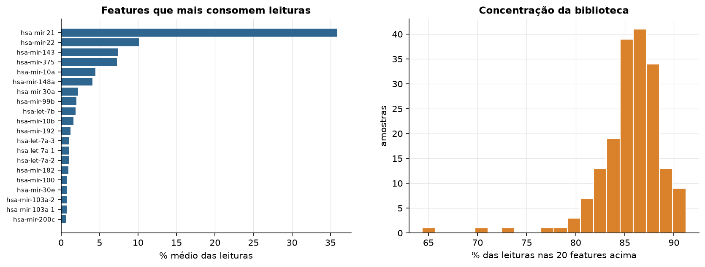
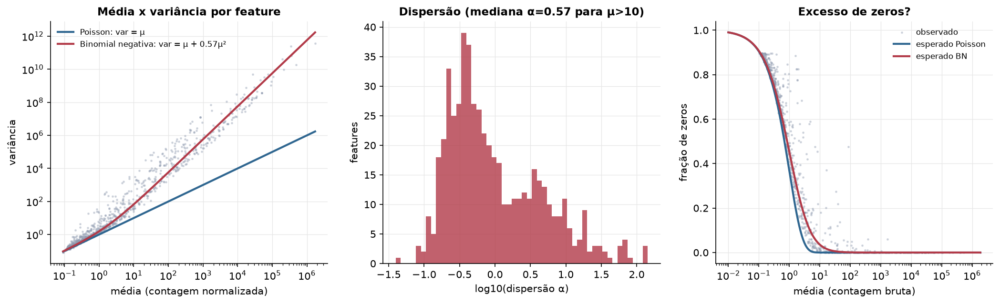
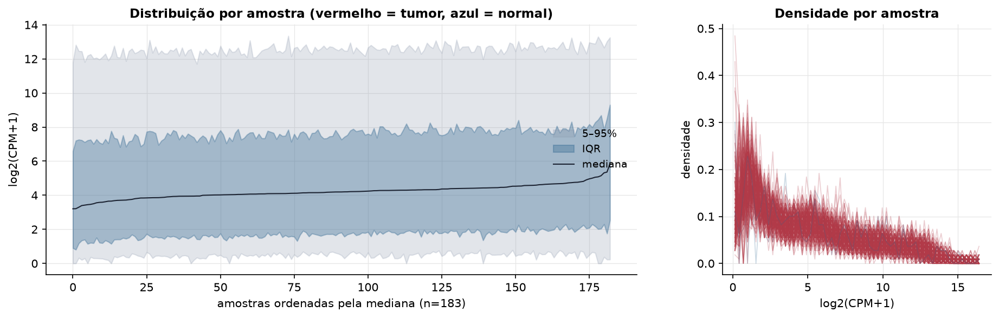
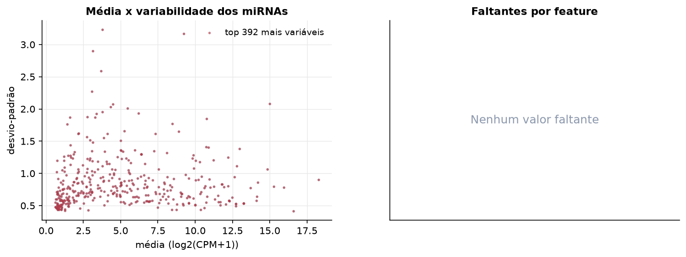
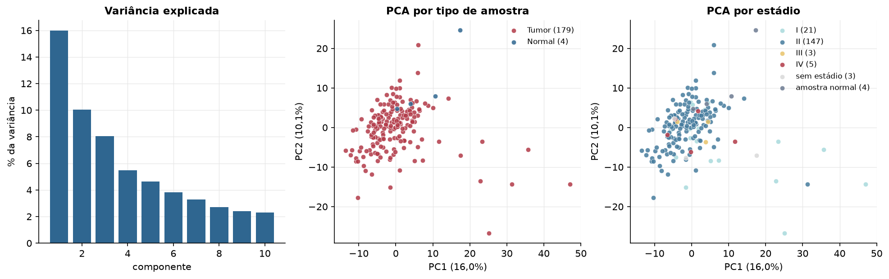
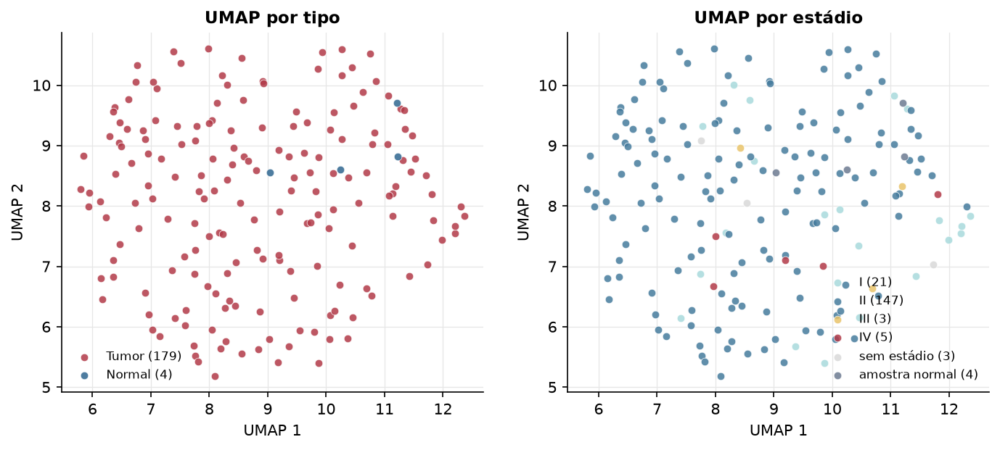
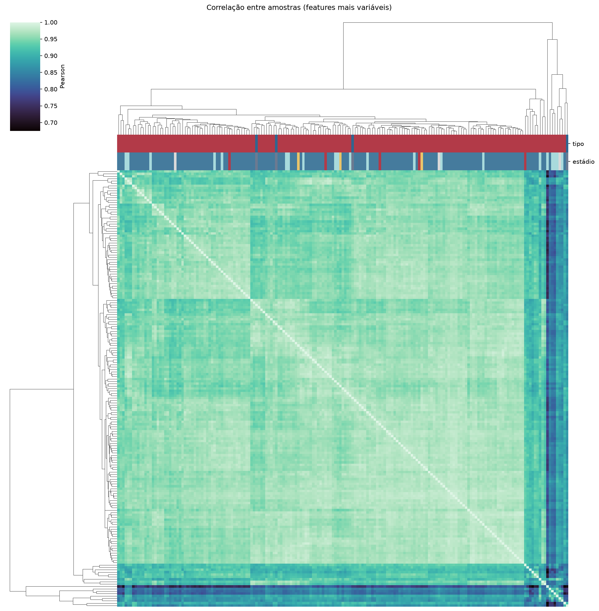
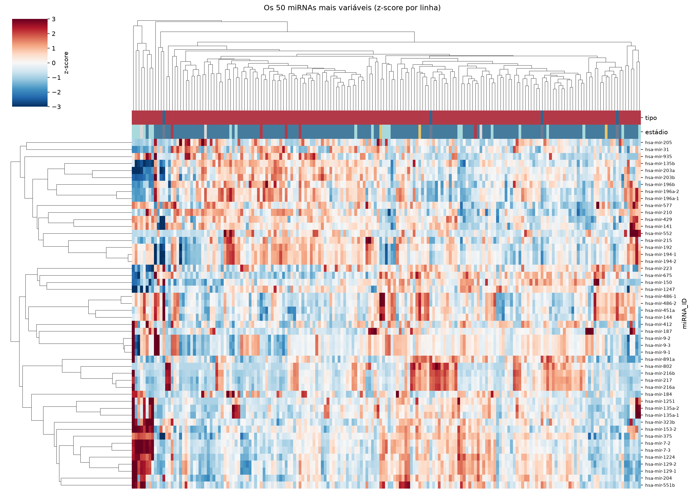
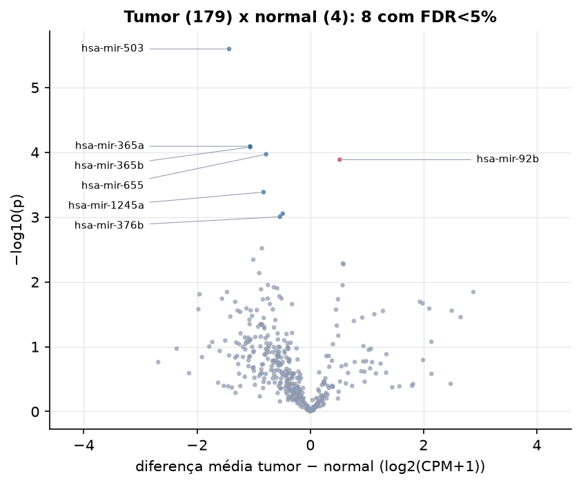

PAAD · miRNA-seq: contagens brutas (GDC)
BCGSC miRNA Profiling (miRBase v21) · gerado em 22/10/2026 02:33
4,7 Mtamanho mediano
0,57dispersão mediana α
392miRNAs
179amostras tumorais
4amostras normais
0,0%valores faltantes
Fonte: API do GDC (BCGSC miRNA Profiling)
Principais resultados
- Bibliotecas de 1,3 a 19,1 milhões de leituras (mediana 4,7). 972 de 1.881 features têm leitura em pelo menos 10% das amostras.
- A variância cresce bem acima da média: a dispersão mediana da binomial negativa é α=0.57 (para features com média > 10). Isso descarta um modelo Poisson e indica binomial negativa (ou Poisson-lognormal) na verossimilhança.
- A fração de zeros é compatível com a binomial negativa (diferença mediana -1,2%); inflação de zeros não parece necessária.
- Em média 86,1% das leituras de cada amostra vão para as 20 features mais abundantes.
- 392 miRNAs medidos em 183 amostras (179 tumorais e 4 normais); 0,0% dos valores estão faltando.
- Os dois primeiros componentes principais explicam 16,0% e 10,1% da variância das features mais variáveis.
- Correlação mediana entre amostras: 0,96.
- Amostras com correlação muito abaixo das demais (possíveis outliers técnicos): TCGA-3A-A9IS-01, TCGA-3A-A9IV-01, TCGA-2L-AAQM-01, TCGA-2J-AABP-01, TCGA-3A-A9IJ-01, TCGA-3A-A9IO-01, TCGA-3A-A9IR-01, TCGA-3A-A9IL-01, TCGA-H6-A45N-11, TCGA-HV-A7OP-01.
- Tumor x normal: 8 miRNAs diferentes com FDR < 5% (1 maiores no tumor, 7 maiores no normal; 4 pacientes têm o par tumor-normal).
- Mais aumentados no tumor: hsa-mir-92b.
- Mais reduzidos no tumor: hsa-mir-503, hsa-mir-365a, hsa-mir-365b, hsa-mir-655, hsa-mir-1245a, hsa-mir-411, hsa-mir-376b.
- Associações clínicas com p < 0,05 nos componentes principais: PC1 com estádio (p=0.018); PC1 com sobrevida (p=0.00013).
Biblioteca


Sobredispersão e zeros

Exploração em log2(CPM+1)
Features com CPM ≥ 1 em pelo menos 20% das amostras (392 features).
Distribuição dos valores


Estrutura das amostras




Tumor x normal

Features mais diferentes entre tumor e normal
| miRNA_ID | diferenca_tumor_menos_normal | t | p | fdr |
|---|---|---|---|---|
| hsa-mir-503 | -1.434 | -14.349 | 2.54e-06 | 0.000997 |
| hsa-mir-365a | -1.063 | -9.445 | 8.08e-05 | 0.01 |
| hsa-mir-365b | -1.062 | -9.443 | 8.3e-05 | 0.01 |
| hsa-mir-655 | -0.782 | -7.476 | 0.000107 | 0.01 |
| hsa-mir-92b | 0.519 | 6.097 | 0.00013 | 0.01 |
| hsa-mir-1245a | -0.827 | -8.501 | 0.000411 | 0.027 |
| hsa-mir-411 | -0.488 | -5.351 | 0.000883 | 0.048 |
| hsa-mir-376b | -0.537 | -5.176 | 0.000987 | 0.048 |
Associação com variáveis clínicas
p-valores da associação dos três primeiros componentes principais (só tumores) com estádio (Kruskal-Wallis), sexo (Mann-Whitney), idade (Spearman) e sobrevida global (Cox univariado).
| estádio (Kruskal) | sexo (Mann-Whitney) | idade (Spearman) | sobrevida OS (Cox) | |
|---|---|---|---|---|
| PC1 (16,0%) | 0.018 | 0.201 | 0.307 | 0.00013 |
| PC2 (9,7%) | 0.14 | 0.664 | 0.413 | 0.722 |
| PC3 (8,1%) | 0.175 | 0.213 | 0.461 | 0.127 |